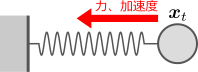
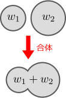
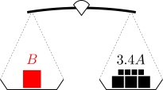
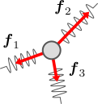

力から加速度
を導く法則（＝ニュートンの運動方程式）を書下したい。
重力以外についても、運動方程式が存在しそう
前章で扱ったキャッチボールにおいて、投げられたボールが下向きに加速するのは、重力によってボールが下方向に引っ張られるからである。即ち、重力が加速度
を生み出しているわけである。ところで、これは重力に限ったことではない。日常的に体験しているように、物体に力を加えれば、その強さに応じて力の方向に加速度が生じる。ということは、力から
を決める法則（ニュートンの運動方程式という）が存在するのではないだろうか。摩擦がある場合は、力を加えても静止したまま加速しないこともあるが、これは「加えた力と摩擦力が釣り合っているため」と考えられる。綱引きを考えれば分かるように、力は、「足し合わせる」ことによって打ち消せる。

例えば右図のように、バネに繋がれたおもりが振動しているとする。知りたいのは、おもりの運動
（＝任意の時刻
におけるおもりの位置）である。おもりがバネから受ける力
は既に分かっているとする。例えば、バネの長さを変えて
を測定するという実験を行えば、
をバネの長さの関数として表せるだろう。この時、「おもりに働く力
」と「おもりの加速度
」を結びつける方程式（＝ニュートンの運動方程式）が存在すれば、
を求めることができる。そうすれば、前章と同様に、初期位置
および初期速度
のもとで、バネにつながれたおもりの運動
が計算できることになる。
とはいえ、実験から力
を求めるといっても、そのためにはまず、「力」という感覚的な概念を定量化する必要がある。今のところ分かっている運動方程式は、キャッチボールの場合：
だけなので、そこに働く力である重力の定量化から始めるのがよいだろう。そうして得られた重力を用いて式()を書き直せば、重力の場合のニュートンの運動方程式が得られる。その式を参考にすれば、一般的なニュートンの運動方程式が得られるのではないだろうか。そこでこの章では、以下の2つの節に分けて、ニュートンの運動方程式に迫ることにしよう：
重力の定量化ニュートンの運動方程式（補足）単位
上では例としてバネを取り上げたが、力学の主な目的は、物体の運動
を計算することである。その流れをまとめておく：
物体に働く力を、実験などから求める加速度を、ニュートンの運動方程式から求める初期位置と初期速度を与えた上で物体の運動を計算する
2.1重力の定量化
この節では、まず、重力
の定量化を、よく知られた天秤の方法を用いて行う。その後、
と加速度
の関係式、即ち、重力の場合のニュートンの運動方程式()を導く。
重力 の定量化には、天秤が使える：式()
力という概念は、日常的なものではあるが、それをどのように定量化すればよいかは自明ではない。とはいえ、力は、向きと大きさを持っているので、何らかのベクトルで表すことができそうである。重力
であれば、向きは「鉛直下方向」、大きさは「重い物体ほど大きくなる」といった具合である。力の向きは直感的に分かるだろうから、力の大きさをどのように定量化するかが問題になる。
重力
において、その向きは、重力加速度
の方向に一致するので、以下の形で書けるはずである：（
は、
を正規化したもの：
）
係数
は、
の大きさである（重いものほど大きくなるようにとるのが自然だろう）。
重力を定量化するためには、重力の大きさ
を決めてやればよい。ところで、「重力の大きさ」とは、身近な言葉でいえば、物体を持ち上げる際の「重さ」に他ならない。物体の重さは、天秤を使って量れることが知られている（以下の【2.1-注1】）。
の定量化としては、これをそのまま用いて
天秤で決めた重さ
とするのが自然だろう。

なお、本章の冒頭でも触れたように、力は足し合わせ可能だと考えられる。この性質を加法性という。式()の重さ
は、この加法性を持ったものになっている。即ち、重さがそれぞれ
の2つの物体を合体させると、全体の重さは、和
になる（右図）。この性質が重力()にも受け継がれるので、重力も加法性を持つ、即ち、合体した物体全体に働く重力は、元の各物体に働く重力の和になる。力がベクトルとして表されることを期待しているので、これは好ましい性質である。
【2.1-注1】天秤を用いた重さの定量化
天秤を用いて重さを実際に量るには、まず、重さの基準となる物体
（1リットルの水と同じくらいの重さ）を持ってきて、その重さを
と定義する（
は重さを表す単位で重量キログラムという）。さらに、「
を10等分したもの」を
と呼ぶことにし、その重さを
と定義する。10等分するには、10個に分けられた分割物体の重さが互いに等しくなっていることを確認する必要がある。そのためには、任意の2つの分割物体を天秤の各皿に乗せて、天秤が釣り合うかどうかを見ればよい。全ての組み合わせで釣り合っていれば、分割物体の重さは等しい。

これらを使って、次のように、任意の物体
の重さを定量することができる。例えば物体
が、右図のように（
個の
）＋（
個の
）と釣り合えば、Bの重さは、総和を取った
である。うまく釣り合わなければ、
、
と細かくしたものを使うことにより、より精密に量ることができる。
重力 におけるニュートンの運動方程式：式()
重力
が定量化できたので、これを使って、今分かっている唯一の運動方程式であるキャッチボールの運動方程式
を書き換えよう。これは簡単で、以下のようになる：
（
の定義式()を代入すれば、式()に戻る。）これが、重力
と加速度
を関係づける方程式、即ち、重力におけるニュートンの運動方程式である。
係数
は、物理的意味を持つものなのだろうか。気になる所だが、式()を導くことがこの節の目的だったので、とりあえず次に進むことにしよう。一般的な力を考える中で、この係数の意味も分かってくることが期待される。
2.2ニュートンの運動方程式：式()
この節では、まず、一般の力の定量化を行う。その後それを用いて、本章の目的であるニュートンの運動方程式()を導く。
一般の力 は、バネ量りによって定量化できる
一般の力
を定量化したい。これまでも何度か指摘してきたように、力には加法性があると思われる。従って、2つの力
が1つの物体に働いて全体として釣り合っている時、それらのベクトル和がゼロ：
（釣り合いの式）
となるように定量化するのが自然である。2つの力のうち一方は、既に定量化が終わっている重力を考えるのがよいだろう。
そこで右図のように、バネに物体をつけて持ち上げ、そのまま静止させる。この時、バネによる力
と重力
は釣り合っているので、上述のように
が成り立つはず。よって、
は
と定量化できるだろう。この時、バネの伸び
と重力の大きさ
は1対1対応すること（以下の【2.2-注1】）が知られている。よって、バネの伸び
を測定すれば
が決まるので、式()を使うことにより、
から
を決めることもできる。
この性質を使って、一般の力の大きさを測ることができる。即ち、バネに一般の力
を作用させたまま釣り合わせた時、その時の
を測ることにより
が分かるので、釣り合いの式
から、
を決めることができる。要するに、
が等しい力は、重力でない場合であっても、全て大きさが等しくなると定義するわけである。

このようにして定量化した力は、力の向きがそろっていない場合の釣り合いにおいてもうまくいくことが、実験的に分かっている。例えば右図のように、ある物体に、3つの力
を加えた時、その物体を静止させることができれば
が成り立つ。これは、力の加法性が、矛盾なく成立しているということであり、良い知らせである。
【2.2-注1】バネ量りの原理
バネにおもりを吊るした時、おもりの重さ
とバネの伸び
は、1対1対応する。即ち、
を決めれば
が決まるし、逆に、
が分かれば
が逆算できる（予め
と
の対応表を作っておく）。
これを使って、物体の重さを量ることができる。これをバネ量りという。
ニュートンの運動方程式：式()
さて、もともと求めたかったのは、一般の力における運動方程式である。前節で求めた、重力における運動方程式()：（再掲）
はその特殊な場合であるため、これを一般化することを考える。
もっとも単純なのは、式()の重力
を、重力以外の力
に置き換えたもの：
である。これが正しいかどうかは、実験的に確かめるべきであるが、実際に正しいことが知られている。従って、重力を使って求めた比例係数
は、実際には、重力に限らない普遍的な値ということである。
そこで、これに名前を付けておこう。この係数の逆数を、
と書く：
を質量と呼ぶ。逆数をとったことにより、
は重さ
に比例する。よって、質量
も加法性を持つ。即ち、質量
の2つの物体を合体させたものは、質量
を持つようになる（右図）。重力
（式()）を、
を用いて書いておくと
となる。
質量
を用いて運動方程式()を書き直すと
となる。これを、ニュートンの運動方程式という。複数の力
が働いている場合、力の加法性が成り立つので、式()に
を代入すればよい。（
と
の単位については、以下の【2.2-注2】を参照。）運動方程式()により、物体に固有の質量
と、物体にかかる力
が分かれば、力の種類（重力、バネ、手押しなど）には依らず、その物体の加速度
が分かる。よって、第1章と同様に、初期位置・初期速度の下で、運動を計算することができる。具体的な計算は第3章で扱う。
【2.2-注2】質量 と力 の単位
質量
の単位は、
と書き、キログラムと読む。
の重力を受ける物体の質量が
となる。（1リットルの水の質量がおよそ
。）
力
の単位は、
を用いて書くと、
となる（式()の両辺の単位が一致することからわかる）。あるいは略記して
とも書く（ニュートンと読む）。単位の一般論については、次節を参照。
ニュートンの運動方程式()を用いた、力 と質量 の測定
運動方程式()が正しいことが分かってしまえば、逆に、力
と質量
を測定する手段として、この式を使うこともできる（以下の【2.2-注4】）。そうすれば、これまでのように、重力を経由しなくてもよくなる。これまでは、天秤を用いて重力
を定量化し、
とのつり合いからバネ量りの目盛りを入れ、バネの伸びから任意の力
を定量化したのであった。
【2.2-注4】運動方程式による質量 と力 の測定
運動方程式()：（再掲）
を用いることにより、任意の力
、および、任意の物体の質量
を測定することができる。原理的には、以下のようにすればよい：
1質量の基準となる物体
（例えば1リットルの水）を用意し、その質量を
と定義する。
2未知の力
を定量するには、
を
に作用させればよい。その時の加速度
を測定すれば、式()の未知数は
だけとなり、
が求まる：
3未知の質量
を定量するには、すでに測定済みの任意の力
を、対象となる物体にかければよい。その時の加速度
を測定すれば、式()の未知数は
だけとなり、
が求まる：
ただし、
として、重力
を採用することはできない（式()を上式に代入すると
が打ち消すため）。
2.3（補足）単位
ここまでは、単位について理解していることを前提として話を進めてきた。ここで一度立ち止まって、単位について詳しく見ておく。
物理量の定量化は、定数倍を除いて一意に決まる
単位を表記するのは、どのように物理量を定量化したかを明示するためである。例えば、単位を示さずに「この棒の長さは
である」とだけ言われても伝わらない。通常、この定量化には自然なものが存在し、単位（＝どこで定量値が
になるか）を人為的に与えれば一意に決まる。例えば、「長さ」であれば、
の長さを与えてやれば、それ以外の長さは、
であれば「
のものを2つ足し合わせた長さ」、
であれば「
のものを2等分した長さ」のように決まる。長さ以外の物理量の場合でも、自然に足し算や定数倍が定義でき、単位を与えるだけで自然に定量化できる。例外は温度で、足し算や定数倍が自然に定義できない。しかし、熱力学編4.2節で見るように、自然な定量化の方法が存在する。
このように、定量化には自然な方法が存在する一方で、単位の取り方という形で任意性が残る。とはいえ実際には、単位の取り方を変えても、定量値が定数倍ずれるだけである。例えば
と
では、定量値が
倍違うだけ。自然に定量化された温度も同様。物理量を
のように「定量値×単位」の形で表記するのは、この性質を生かして、単位変換を容易にするためである。実際、
の単位変換は、
を用いて単純な置き換えで実行できる：
物理量の積
物理量同士の掛け算や割り算にによって新たに作られた物理量の単位は、単位変換の整合性から決まる。例えば、微小時間
における長さ
の変化
は、1次近似により
と書けるわけだが、
の単位を
としてやれば、式()のような単位変換に対して両辺の定量値が一致する。自然な定量化を行っていれば、ニュートンの運動方程式のような物理法則は、定量値同士の単純な掛け算や割り算で表せることが多い。その式に新たに表れた物理量の単位は、このように単位変換の整合性から決めればよい。
ただし、法則中に現れる変数は、複雑な関数形になっている場合ある。その場合は、変数が本来の単位を持つよう、必要に応じて無次元化する必要がある。そのような変数として例えば、力
を考える。座標
に対して、
が指数関数的に振る舞うことはあり得る。しかしこの場合、
のようにはならない。これだと、
がどのような値なのか、単位変換でどうなるのか不明である。実際には、
のようにして、無次元化する必要がある（
の部分は場合によって異なる）。そうすれば、値が定義でき、単位の取り方でその値は変わらないことも分かる（単位の取り換えは、定量値が定数倍されるだけなので、指数関数部分は変化しない）。
単位を意識する利点
単位変換をすることはほぼないので、普段は、単位を意識する必要はない。ただ、意識しておくと便利なこともある。1つは、計算ミスに気付きやすくなることである。例えば
という関係式が得られたとして、両辺の単位が異なっていたら、どこかで計算を間違えている。
もう1つは、関係式の推定である。
という形の式が欲しい場合、関係しそうな物理量を組み合わせて、
の単位と同じものを作ることで、ある程度あたりをつけることができたりする。これを次元解析という。